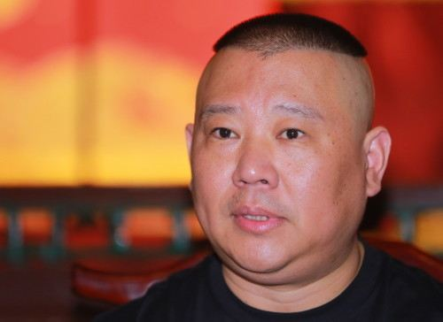

【导读】：今年6月，德云社之《亲子爱徒》相声大会全国巡演在南京启动，郭德纲的门下弟子阎鹤祥、曹鹤阳等以及其子郭麒麟将组成三对儿相声组合轮番登场。郭德纲对今年的首场演出相当满意，在当天旁边体育馆有演唱会的情况下...
1郭德纲：我岁数大了 以后不会惹事了 2郭德纲聊高考：逼子女拿文凭的家长自私 3郭德纲谈“规矩”：儿子演出失败被骂半夜 4郭德纲昔日长文谈“规矩”命中北京高考作文 点击图片进入下一页
今年6月，德云社之《亲子爱徒》相声大会全国巡演在南京启动，郭德纲的门下弟子阎鹤祥、曹鹤阳、张鹤伦、烧饼等人以及其子郭麒麟将组成三对儿相声组合轮番登场。郭德纲对今年的首场演出相当满意，在当天旁边体育馆有演唱会的情况下，《亲子爱徒》的上座率仍有八九成。他表示，目前相声的商演市场，应是只有德云社才能挣到钱，而现在是他最轻松的时候，孩子们撒到外面去按部就班的工作，自己则尽捡了感兴趣的事情来做。“我今年41，会开始逐渐递减工作量，以后就说书唱戏，四处玩玩，不争名夺利，不招惹是非。”对于过往，他回应道：“没有什么不能说的，你们老替我想多了。”